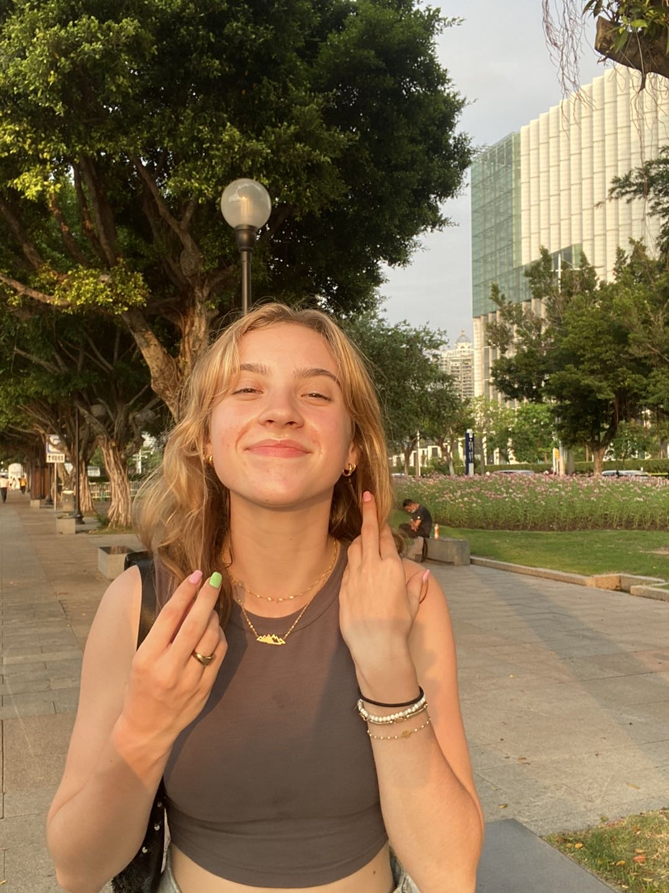
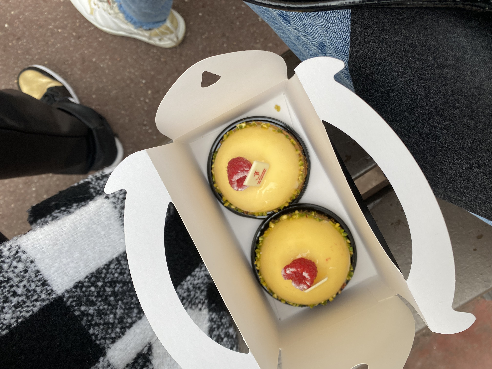
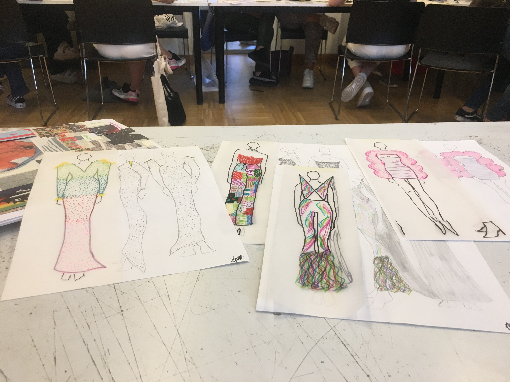

|  |
EMMA is an 18 year old French student, currently studying at essec business school.
|
Sports
A psg fan, a football lover and athlete. She has been captain of the varsity volleyball and football team of her high school and is a left midfielder for the essec feminine football team. This has made her a supportive leader for her teammates and a skilled asset for the team.
|
|  |
Food
Since she was 5, Emma has always loved to cook and bake for her family. Her grandma was her very first influence and taught her all the basics. As she got older, she started experimenting with new recipes and trying new techniques. Now, Emma is a confident cook and loves to spend time with others cooking and sharing recipes.
|
Fashion
Emma was first introduced to fashion through the top model coloring books she received as presents for christmas when she was small. As she grew up, Emma lost her interest in fashion and was more interested in which outfit she should wear to play football at lunch rather than style.
|
 |
Travel
Emma has had the chance to travel around the world, from Australia to Costa Rica to Norway. Her parents have shown her some of the most beautiful places on earth and have introduced her to one of her passions; travelling. As a family, her parents, her siblings and herself visit countries as if they were locals and learn a lot about each culture, religion and place they have been to.
|